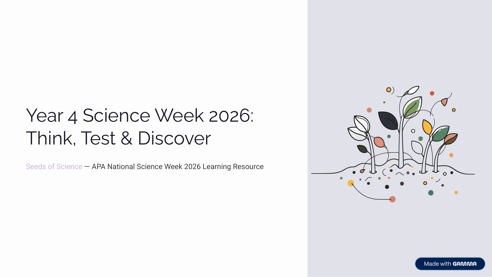

Year 4 · Science · National Science Week 2026 · Free Printable
Year 4 Science Week 2026: Think, Test and Discover
Could you solve a real problem using science? Explore scientific thinking, plan investigations, test ideas and discover how science works in everyday life.
Worksheet Preview

Learning Intention
Students will use scientific thinking to ask questions, make predictions, plan simple investigations, collect evidence and explain their findings.
Australian Curriculum
Supports Year 4 Science Understanding and Science Inquiry Skills. Suitable for National Science Week 2026 classroom or home use.
Teacher Notes
Perfect for National Science Week 2026. Use as a complete mission pack or individual pages. Encourage students to discuss their predictions and results with a partner or group.
Skills Practised
- Scientific thinking and questioning
- Planning simple investigations
- Making predictions and collecting observations
- Explaining findings with evidence
- Working scientifically with others